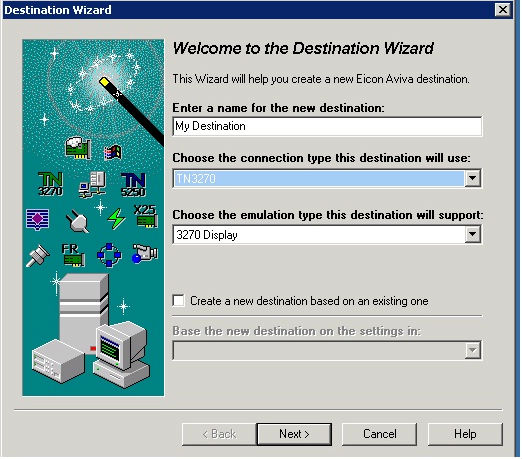
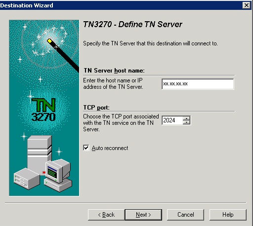
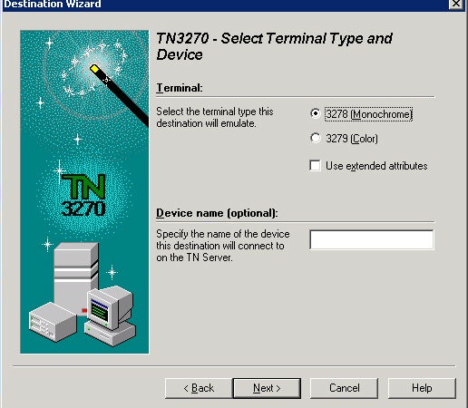
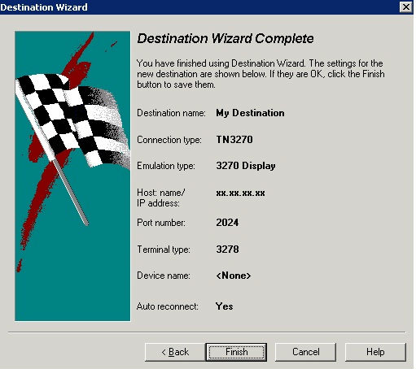
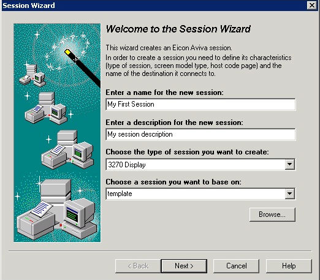
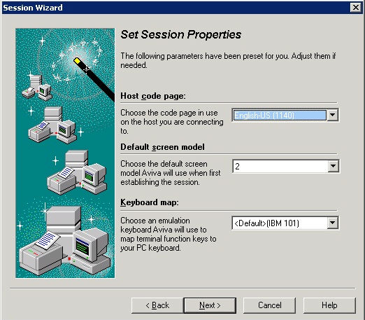
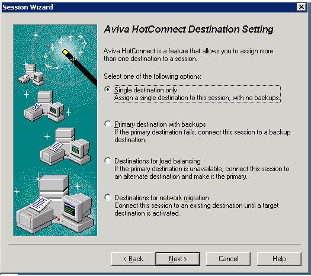
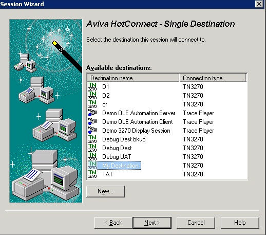

登陆大型机——Aviva的介绍
2010-10-28
一般我们日常用PC机工作拿什么软件来跟大型机(以下简称大机)交互呢? 理论上说几乎所有的终端登陆软件都可以的。而且一般每种终端登陆软件都支持多种协议连接到大机上，比如最常见的TCP/IP，FTP,TELNET,SSL等等。这些软件有很多，外面比较常用的是PCOMM，putty，SecCRT等等，我只用过PCOMM，稍微配置下IP啥的就可以连大机了。这个百度下就出来一堆。
我们公司比较另类，用的终端软件叫Aviva，一般我们读作"鹅vi哇"，希伯来词，意为“美丽的春天”, 产自美国美国(Eicon)公司。谷歌能下载到，不过只有试用版的貌似。
下面我说下Aviva的一些基本概念和使用。
Destination和Session的配置:
所谓Destination 就是大型机的物理IP，你要连接到大型机上，就必须得配置下大型机的IP。装好aviva后，开始——>程序——>Eicon Aviva——>Create New Destination
这里destination的名字就取：My Destination
Connection type:TN3270

大型机的物理IP:



这样，Destination就配置好了！
下面是Sesstion的配置。Session就是用来连到Destination交互的，你可以建很多个不同名字的Session，都指向同一个Destination
因为平常的工作当中，经常需要建好几个session，比如可以一个用来登陆ONLINE CICS的，一个用来BATCH操作的，这个随便你建几个。这里，我建一个session名字就叫:My First Session

这里可以是默认的

有时候公司会有两台大型机(两个IP)，这时候可以选择一个Destination用做Primary,另一个用作backup的。因为我们前面只建了一个Destination,所以这里就选Single Destination only好了：

选中我们上面建的Destination:My Destination


这样，运行这个session，点击连接，你就能看到那大机那熟悉的黑屏画面了！
(一般公司都会将大机的默认登陆画面改成包含公司logo的画面，所以不截图了)
Category: articles Tagged: z/OS